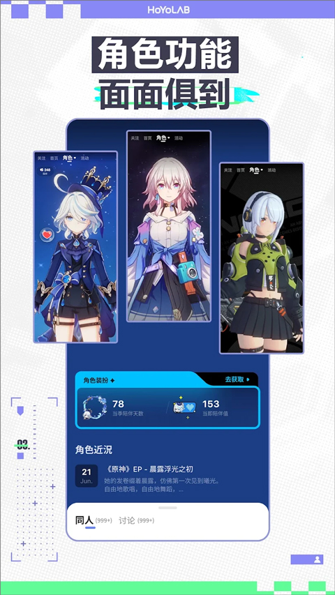

HoYoLAB 六年迭代：从游戏公告板到玩家社区的缓慢转身
从 2019 年上线到今天，HoYoLAB 走了一条不紧不慢的路。本文沿着版本号回溯它的关键转折点，看看这款社区 App 背后团队的真实优先级。
现在这版：一个被低估的社区容器
我最近打开 HoYoLAB官网 的频次比一年前多了不少。不是因为它突然有了什么杀手级功能，而是我发现——我在里面花的时间，已经开始自动分流我的使用场景了。查版本更新节奏、蹲角色预告、找同好聊卡池体验，甚至只是每天五分钟签到攒成就，这些原本散在贴吧、Discord 和各个攻略站的碎片行为，现在都被收进了同一个容器里。
这个容器现在长什么样？它的结构大概是这样的：首页是混合信息流，关注的角色频道、同好的发帖、官方的活动公告按权重混排；底部五个导航标签里，"社区"和"我的"各占一端，中间夹着签到、活动和工具入口；角色频道已经是每一位热门角色的标配——打开一个角色频道，近讯、同人、讨论区一眼全齐，粉丝甚至能在频道里攒"陪伴值"给角色做装扮。
说它被低估，是因为很多玩家至今还把它当"官方公告板"——有事从官方下载下来看一眼版本说明，没事就卸载。但如果你把它当社区来用，就会发现它其实已经悄悄长出了一副完整的骨架：成就中心有签到、发帖、互动的全链路奖励机制，创作者激励项目持续在扶持同人内容，甚至还有一套比较完善的账号安全体系，支持 Google、Apple、Game Center 三方关联登录和独立的账号申诉通道。
来路：它从一个很薄的起点出发
样本文档里其实没有提到 HoYoLAB 最初上线的那些版本——大概 1.0 到 2.x 的历史，文档站只字未提。这本身就是一个有意思的信号：早期版本太薄了，薄到不值得在现在的文档里留位置。
我对它的印象也是这样：刚出来的时候，它几乎就是一个"移动端公告页 + 签到器"。没有角色频道，没有成就中心，社区内容薄得像一张纸。那几年 HoYoverse 的主力显然还是游戏本身——原神在快速迭代，版本节奏一个接一个，社区产品能跟上"别出大错"的水平就算完成 KPI。
第一个值得写进迭代史的版本节点是 3.0.0——角色频道上线。这是它第一次明确"我们要做什么"：从一个面向全体玩家的泛社区，转向"以角色为中心"的粉丝阵地。每个热门角色有了自己的专属频道页，里面聚合了角色近讯、同人、讨论，甚至还有装扮面板和陪伴数据。这个设计的聪明之处在于，它把原本散在贴吧、微博、Pixiv 的角色同人"收编"到了官方容器里，同时给了粉丝一个持续回访的理由——关注一个角色频道，等于订阅了这个角色的全部动态。
紧接着是 2.60.0 版本的成就中心大升级。成就中心本身早就有了，但 2.60.0 那次加了"里程碑"这个概念——不再只是签到多少天、发多少帖的线性累加，而是加入了高阶的、面向长期社区积累的专属成就和徽章。这个升级看起来是小改动，但背后的信号很清楚：团队开始认真想"怎么让老玩家留下来"，而不是只盯着拉新。签到类、内容类、互动类、活动类、里程碑类成就的划分，本质上是在给不同类型的社区行为定价——不管你是水签到、写长文、蹲活动还是纯刷互动，都能找到自己的成就路径。
在这两个版本节点之间，还有一些细碎但关键的填充：三方账号关联逐步完善（Google、Apple、Game Center 登录都打通了）、帮助中心和独立的账号申诉通道上线、创作者激励项目持续迭代。这些功能不是大新闻，但它们是把"公告板"变成"社区容器"的地基——账号安全让人敢留，申诉通道让人不慌，创作者激励让内容生产者愿意来。
规律：团队在死磕什么，什么一直不管
把这些版本节点串起来看，迭代的优先级非常一致：角色驱动的粉丝经济 > 社区安全与信任 > 基础设施补齐。
角色频道是这个逻辑的最核心体现。HoYoverse 的内容资产本质上是角色——原神的提瓦特、崩坏的琪亚娜、崩铁的星铁宇宙，每一个角色都是持续产出的流量入口。HoYoLAB 的角色频道把这个资产变现成了社区粘性：一个角色出皮肤，粉丝去频道看近讯；一个角色开卡池，讨论区爆帖；甚至只是攒陪伴值给角色做装扮，都是在强化"我是这个角色粉丝"的身份认同。这套逻辑从 3.0.0 走到现在，几乎没歪过。
社区安全和信任是第二优先级。为什么 2.60.0 之后成就中心、帮助中心、申诉通道这些功能密集出现？因为当角色频道把人聚起来之后，"留得住"就成了问题。一个玩家账号被盗、被误封、登不上，如果没有明确的申诉通道，他大概率会流失。HoYoLAB 在这一层做得相当扎实：三方账号关联做多登录通道、账号问题独立表单、申诉材料清单列得清清楚楚、高峰期工单队列的处理节奏也有明确预期。甚至连"哪些事客服也帮不了"这种边界，在HoYoLAB文档里也写得明明白白——这反而是让用户信任的做法。
那什么一直不管？内容推荐的算法打磨。信息流的排序逻辑、话题发现的效率、新用户引导的精准度——这些在大多数社区 App 里是生死线的东西，HoYoLAB 几乎没怎么动过。它的首页信息流至今还是"关注 + 推荐"的简单混合，话题发现基本靠搜索和角色频道自带的聚合。你很难说这是"做不好"还是"故意不做"——但可以确定的是，团队的注意力显然不在"让你刷到更多你可能感兴趣的内容"上，而是在"让你关注的角色永远有新东西"上。
预判：照这个路线，下一步大概率是什么
如果从这个迭代规律往前推，我觉得有三个高概率的走向。
第一，角色频道的玩法还会继续加厚。3.0.0 只是开了个头，陪伴值和装扮面板是后续补的。未来可能会有角色专属的限时挑战、粉丝创作的官方精选、甚至角色频道内部的粉丝等级体系——这些都是围绕同一个逻辑的延伸，把"我是这个角色粉丝"这件事做深做透。
第二，成就中心可能和角色频道打通。现在的成就还是站在"整个社区"的维度，如果出现"你是第一位攒满某角色陪伴值的粉丝"这种角色专属成就，既强化了角色频道的归属感，又给成就中心注入了新的差异化。
第三，创作者激励的门槛可能会进一步降低。目前的创作者激励项目已经覆盖了同人、攻略、Cos 等方向，但从迭代节奏看，团队一直在"让更多人参与"和"保持内容质量"之间找平衡。下一步大概率是给中腰部创作者更多可见性，而不是只扶持头部。
当然这些都是从迭代规律推的，不当官方口径传。HoYoverse 的产品决策很多时候是跟着游戏节奏走的——原神出 5.x、崩铁出新星球、崩坏新主线更新，都会带动社区产品的对应调整。唯一可以确定的是：只要"角色驱动粉丝经济"这条主线不变，HoYoLAB 就会继续沿着它现在的方向，不紧不慢地长。为了方便不同地区的读者，这套 HoYoLAB 的资料我在 GitHub、Gitee、GitCode 三个仓库各存了一份，内容保持同步。
